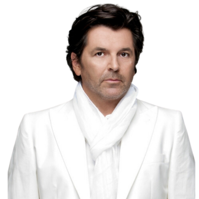
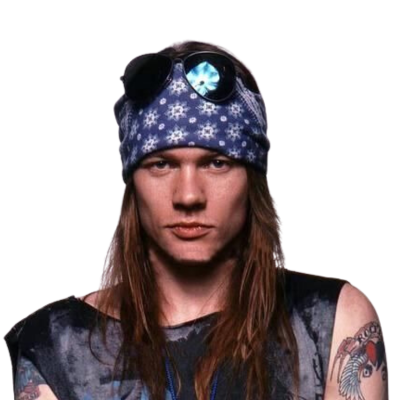

Managing Editor
Associate Professor Dr. Deshinta Arrova Dewi, INTI International University, Malaysia
Editorial Board
Associate Professor. Ts. Dr. Angela Lee Siew Hoong, Sunway University, Malaysia

Associate Professor Ts. Dr. Choo Wou Onn, INTI International University, Malaysia
Associate Professor. Dr. Kingshuk Srivastava, University of Petroleum & Energy Studies (UPES), India
Associate Professor Dr. Yeoh Ging Sun, Deakin University, Australia

Associate Professor Dr. Zalisham Jali, University Sains Islam Malaysia, Malaysia